O.U.T.C.A.S.T. (unreleased)
O.U.T.C.A.S.T. (unreleased)

Surface Tension from Half-Life by Valve

Pleasingpixels: De_icbm_b1, Counter-Strike 1.6
ts_frigid for The Specialists by WillSchnevel
Riverpool by Rimrook

Second Wind from Reissues by Robert Yang
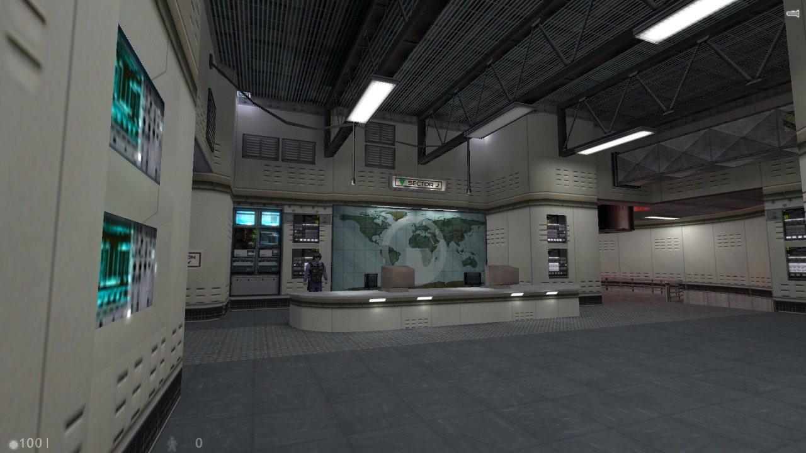
Half-Life: Nightwatch (unreleased)

Camden for Invasion 1955 (unreleased)
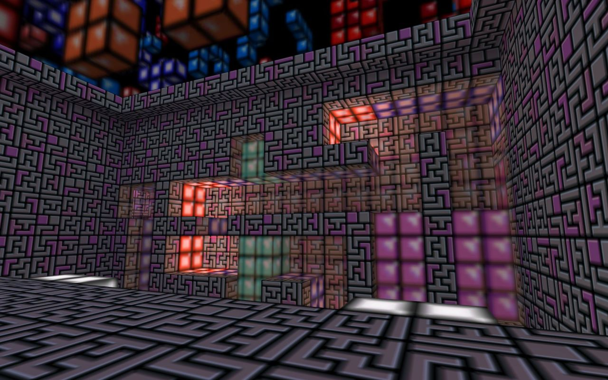
sc_tetris for Sven Co-op by A1win

Pleasingpixels: Dcdm5, Deathmatch Classic
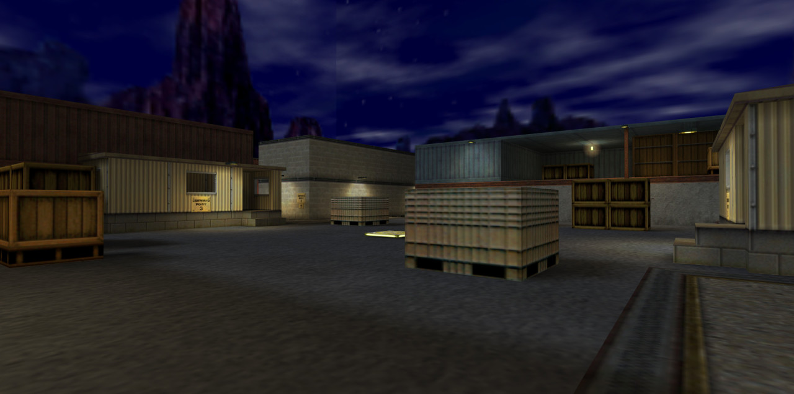
Canalzone 2 for Team Fortress Classic by Valve

dcdm5 for Deathmatch Classic by Valve
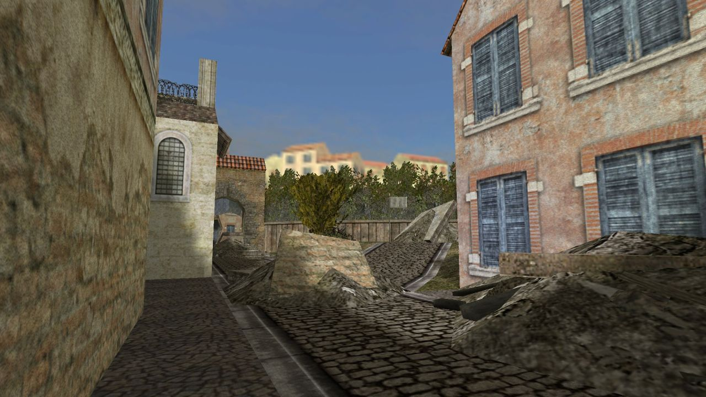
dod_switch for Day of Defeat by Jeremy Miller
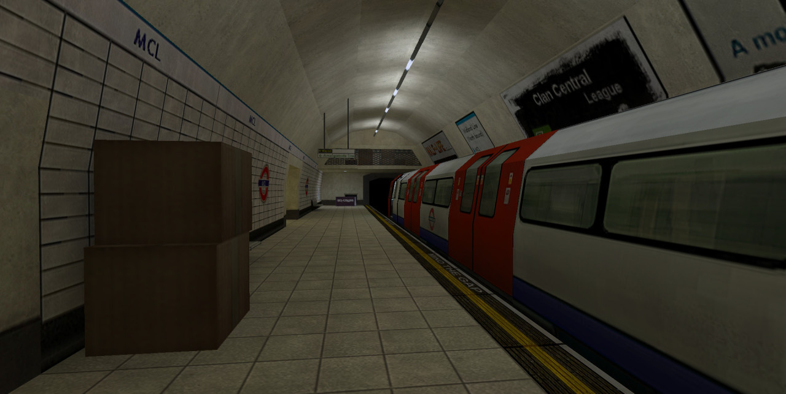
Mind the Gap for Science & Industry by Neil Hollingworth
Half-Life: Delta (upcoming) by XF-Alien
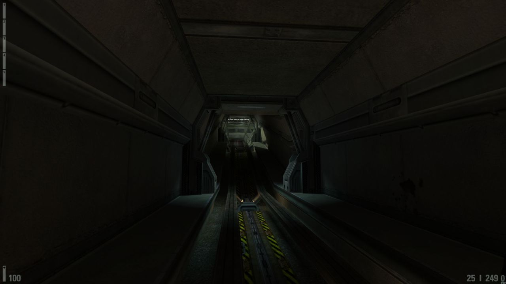
Poke646: Vendetta by Marc Schroeder
Mod of the Week at /r/HalfLife

dm_voidtemple for Half-Life deathmatch by Andy Morris

Pleasingpixels: Rapidcore, Half-Life Deathmatch

ns_lost for Natural Selection by
Marty Rolek

Operation: Red Falcon (unreleased)

Poke646:Vendetta by Marc Schroeder
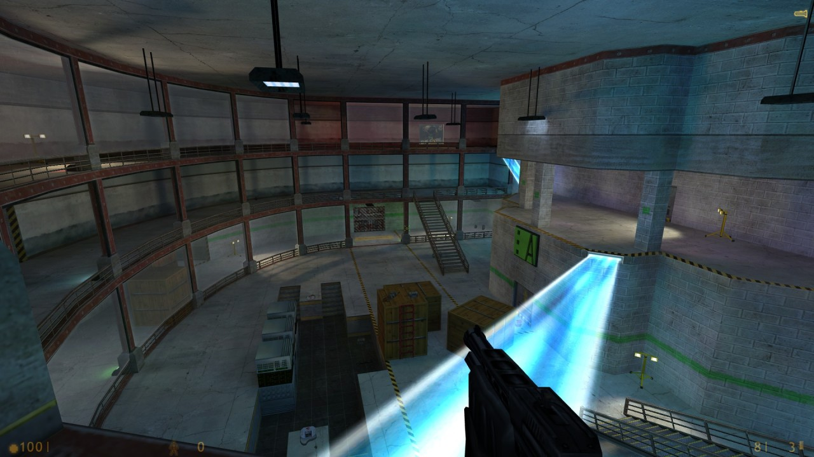
dm_altdel for Half-Life deathmatch by James Archibald
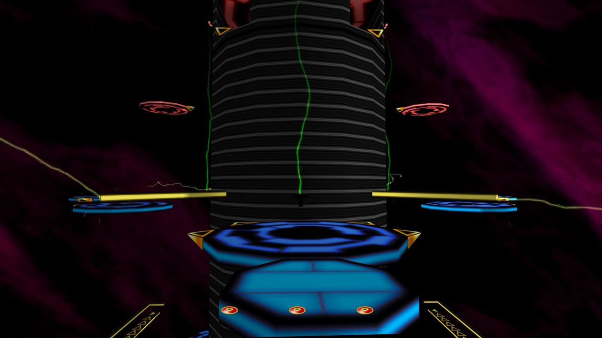
rc_tower for Ricochet

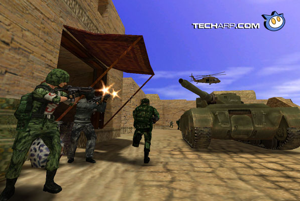
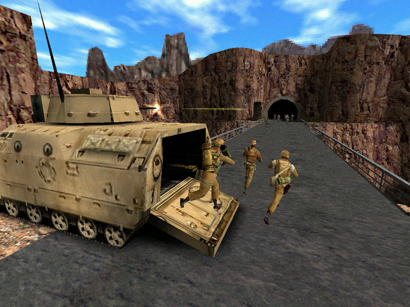
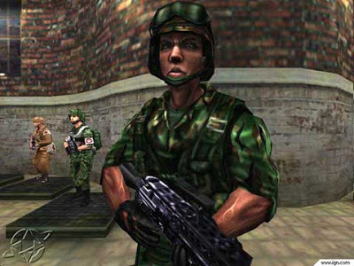
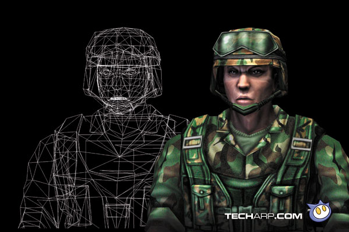
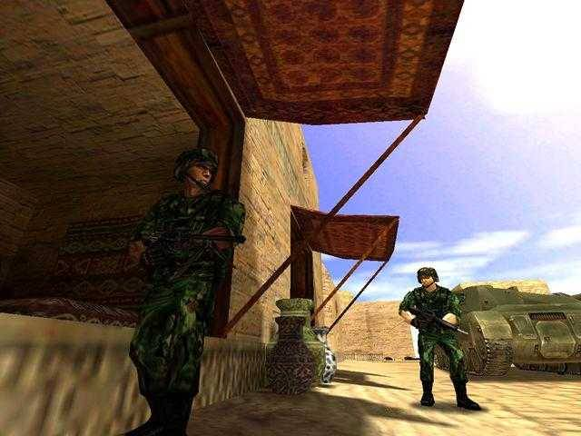
Team Fortress 2: Brotherhood of Arms in 1999.
Valve originally went for a militaristic design, making this version of the game look more like a Counter-Strike with military character models instead of the fun, heavily stylized TF2 of today.
Valve was pushing the GoldSrc engine here with higher-polygon characters and environments, parametric animation and dynamic LOD. All of that was eventually scrapped with the move to the Source engine in the early 2000’s.
There is also some pretty low-fi footage German magazine GameStar shot off a CRT monitor back in 1998, which is the only footage of this version of the game I’m aware of.

The Core (upcoming) by James Archibald and Andy Morris
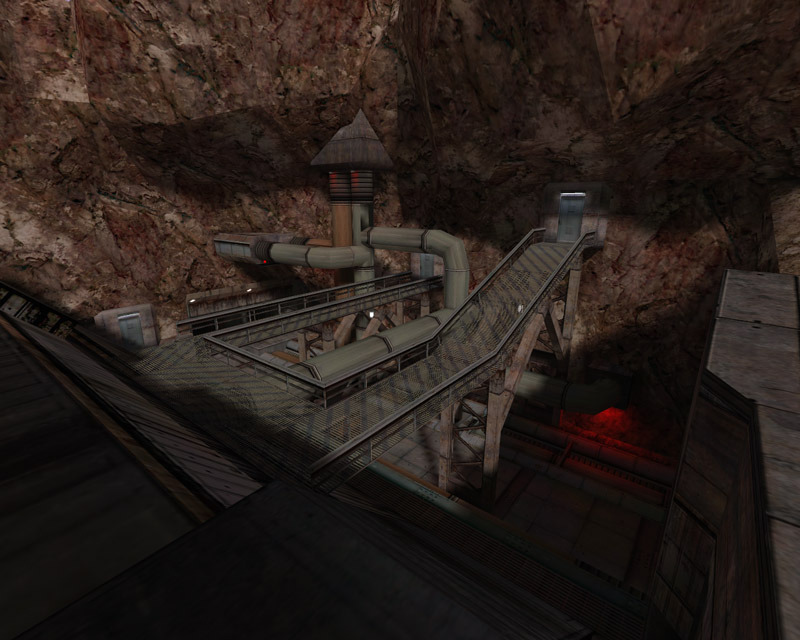
Half-Life: Nightwatch (unreleased)

Black Mesa Inbound from Half-Life by Valve
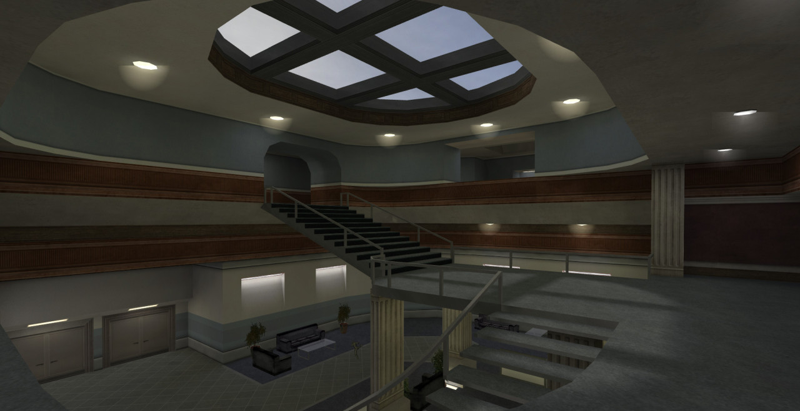
ts_faculty for The Specialists by Schmung
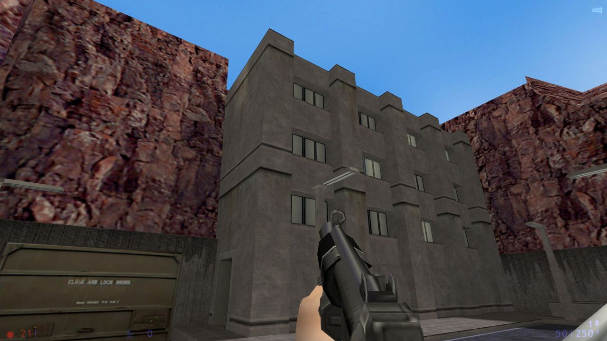
Azure Sheep
Classic of the Month at RunThinkShootLive - http://runthinkshootlive.com/posts/azure-sheep/
Arrangement (upcoming)

ns_origin for Natural Selection by
Mike Rosser

op4ctf_dam for Opposing Force: Capture the Flag by Gearbox


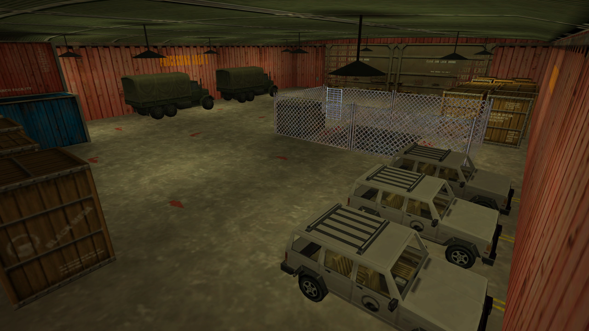
This is my entry for Ragemap 2016. However, due the current issues with optimization discovered on the merged maps a couple of days ago, is going to be delayed, so I decided to release my part for the public meanwhile.
I’m playing with godmode as the Ragemaps are designed to be played up to 10 players at the same time, so it’s very hard (almost impossible) to survive alone. The exit texture seen at the end was to indicate where the next mapper had to start his/her zone (same with the room that has the Generator Access texture, as a way to reach my room from the previous zone).
Created under four hours, and with custom content as the rules says (Blueshift textures and Decay models), my zone are divided into two parts:-The first part is obviously inspirated on the prototype teleporter featured at the end of Half-Life: Blueshift, where you must hold during 300 seconds the place until the machine goes full power.
-The second part is based on the cut chapter Hangar from Decay, where you must seek two security cards in order to open the gates.
The pack includes both the RMF, a compiled BSP that can be played, and the Decay models. You can use the brushwork on your maps, as long as I appear somewhere at the credits.
Link: http://www.mediafire.com/download/bpdvpaufu40d3t9/ragemap2016fenix.7z
My zone features new entities that come with Sven Co-op 5.0, like trigger_numericdisplay (the countdown), or env_sentence (the custom and LOUD VOX sentences, as there are no volume settings). Bear this in mind if you want to use this RMF in another game/mod.
db_terrorbird for Public Enemy

Azure Sheep
Azure Sheep is Classic of the Month at RunThinkShootLive - http://runthinkshootlive.com/posts/azure-sheep/
I’m streaming this in a couple hours at 1pm Eastern US time, 6pm UK time at http://twitch.tv/planetphillip

Poke646: Vendetta by Marc Schroeder